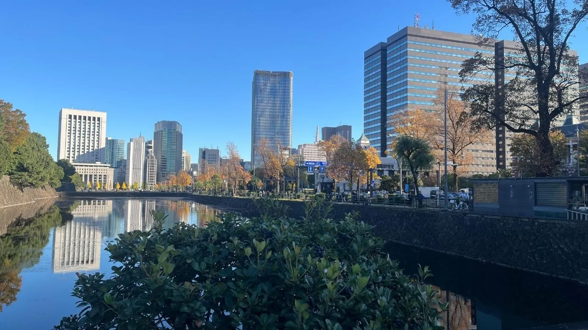

In breve
Accanto alla stazione di Tokyo c'è mezza giornata di Tokyo che costa zero: le mura e i fossati dell'antico castello di Edo, i Giardini Est del Palazzo Imperiale, il famoso ponte Nijubashi e, a dieci minuti a piedi, la stazione in mattoni rossi e i grattacieli di vetro di Marunouchi. È l'angolo più tranquillo del centro: perfetto per la prima mattina dopo il volo o per il giorno in cui parti in Shinkansen.
Foto di questa guida: Riccardo, team 687, Tokyo, novembre 2026.
I Giardini Est del Palazzo Imperiale (gratis)
I Giardini Est (Kōkyo Higashi Gyoen) sono la parte del palazzo dove si entra da soli: niente biglietto e niente prenotazione. Dentro ci sono l'enorme basamento in pietra dell'antica torre del castello (Tenshudai), i vecchi posti di guardia, i prati dove sorgeva la residenza dello shōgun e il giardino Ninomaru, un classico giardino giapponese con laghetto, bellissimo con le foglie rosse tra fine novembre e inizio dicembre.
| Periodo | Orari (ultimo ingresso) |
|---|---|
| 1 mar – 14 apr | 9:00–17:00 (16:30) |
| 15 apr – 31 ago | 9:00–18:00 (17:30) |
| settembre | 9:00–17:00 (16:30) |
| ottobre | 9:00–16:30 (16:00) |
| 1 nov – fine feb | 9:00–16:00 (15:30) |
Gli ingressi sono tre: Ōtemon (circa 15 minuti a piedi dall'uscita Marunouchi Nord della stazione di Tokyo, 5 minuti dalla stazione di Otemachi), Hirakawamon e Kitahanebashimon (5 minuti dalla stazione di Takebashi). Entra da Ōtemon ed esci da Kitahanebashimon se vuoi proseguire verso il parco Kitanomaru e il Budokan.
La visita guidata interna (gratis, con registrazione)
Gli edifici dove vive e lavora la Famiglia Imperiale non sono visitabili, ma l'Agenzia della Casa Imperiale organizza una passeggiata guidata gratuita in una parte dell'area interna, che passa vicino al palazzo e al ponte di ferro dietro Nijubashi. Ci si registra online in anticipo sul sito ufficiale, oppure si prova a prendere un posto in giornata alla porta Kikyōmon la mattina. Nella stagione dei ciliegi e in autunno i posti online finiscono presto.
Nijubashi e il giardino esterno
La grande piazza di ghiaia del Kōkyo Gaien (giardino esterno), con i suoi pini, è sempre aperta. Da qui si fa la foto classica del Nijubashi: il ponte di pietra sul fossato con dietro la torretta bianca Fushimi. Cammina lungo il fossato verso Hibiya o Otemachi: i grattacieli che si specchiano nell'acqua, con davanti le mura antiche e gli alberi d'autunno, sono una delle viste gratis più belle della Tokyo moderna. Il percorso di 5 km intorno al palazzo è anche il giro di corsa preferito dai tokyoti, fatto in senso antiorario.
Marunouchi e la stazione di Tokyo
Tra il palazzo e la stazione c'è Marunouchi, il quartiere degli uffici, ampio e tranquillo nel fine settimana. Da non perdere:
- La stazione di Tokyo lato Marunouchi: l'edificio in mattoni rossi del 1914, restaurato. Alza lo sguardo dentro le cupole degli atri nord e sud.
- KITTE Garden: la terrazza gratuita al 6° piano dell'edificio KITTE, proprio davanti alla stazione. Si vedono dall'alto il tetto della stazione e gli Shinkansen che arrivano e partono; bellissima al tramonto e di sera.
- Naka-dori: la via alberata con negozi e caffè. Da inizio novembre a metà febbraio la sera si accende per la Marunouchi Illumination.
- Il Shin-Marunouchi Building, con una terrazza al 7° piano che guarda anch'essa sulla stazione.
Un percorso di 4 ore
- 9:00 Stazione di Tokyo, lato Marunouchi: foto della facciata in mattoni rossi.
- 9:20 A piedi verso ovest lungo il grande viale fino al fossato e al Kōkyo Gaien: Nijubashi.
- 10:00 Lungo il fossato fino a Ōtemon ed entrata nei Giardini Est: Tenshudai, giardino Ninomaru (1–1,5 ore).
- 11:45 Ritorno a Marunouchi: pranzo nei piani interrati dei grattacieli, dove i menu fissi costano meno di quanto pensi.
- 13:00 KITTE Garden per la vista sui treni, poi Naka-dori. Se parti in Shinkansen, la stazione è a un minuto.
Consigli pratici
- Vai di mattina: in inverno i Giardini Est chiudono alle 16:00 e l'ultimo ingresso è alle 15:30.
- Dentro i giardini non ci sono quasi negozi: porta l'acqua e compra qualcosa in un konbini prima di entrare.
- Le valigie grandi sulla ghiaia sono un problema: lasciale negli armadietti della stazione di Tokyo.
- Rispetta il luogo: niente picnic sui prati dove non è permesso, niente droni e voce bassa vicino al palazzo. Trovi di più nella guida al galateo giapponese.
- Dormi in zona? La guida dove dormire a Tokyo spiega perché Marunouchi e Ginza sono la base migliore nei giorni di Shinkansen.
Organizza i giorni a Tokyo
Alcuni link sono affiliati: se prenoti tramite loro non paghi nulla in più e aiuti 687 a restare gratuito.
La tua giornata a Tokyo, tappa per tappa.
687 Japan mette palazzo, stazione e Shinkansen in un solo itinerario, con mappa offline, meteo e allerte terremoti. Se i Giardini Est sono chiusi, NOW ti propone cosa fare al loro posto.
Fonti
- Agenzia della Casa Imperiale – Giardini Est (orari e giorni di chiusura)
- Agenzia della Casa Imperiale – Registrazione alla visita del Palazzo
- GO TOKYO (turismo ufficiale di Tokyo) – KITTE e KITTE Garden
- National Gardens Association – Kokyo Gaien e Giardini Est
Verificate su questi siti ufficiali a novembre 2026. Prezzi e regole possono cambiare: controlla sempre prima di partire.